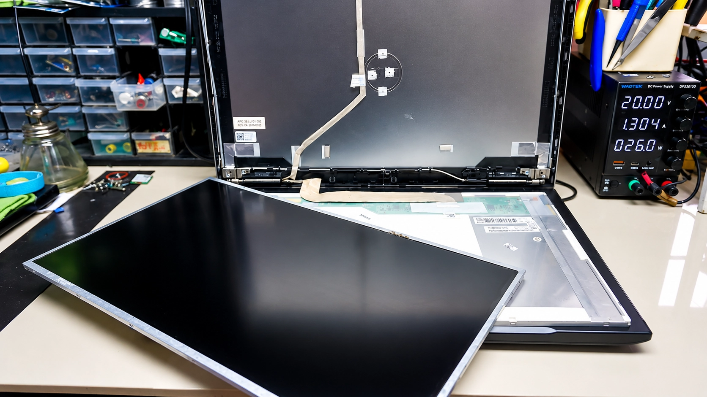
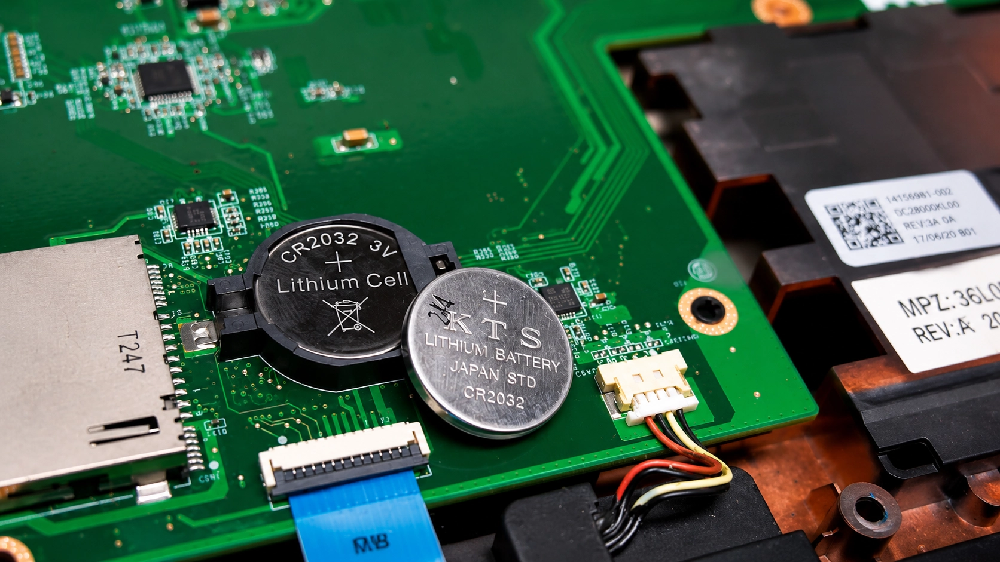
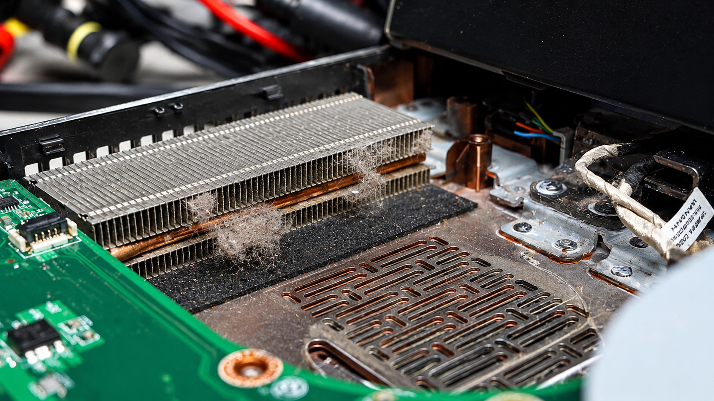
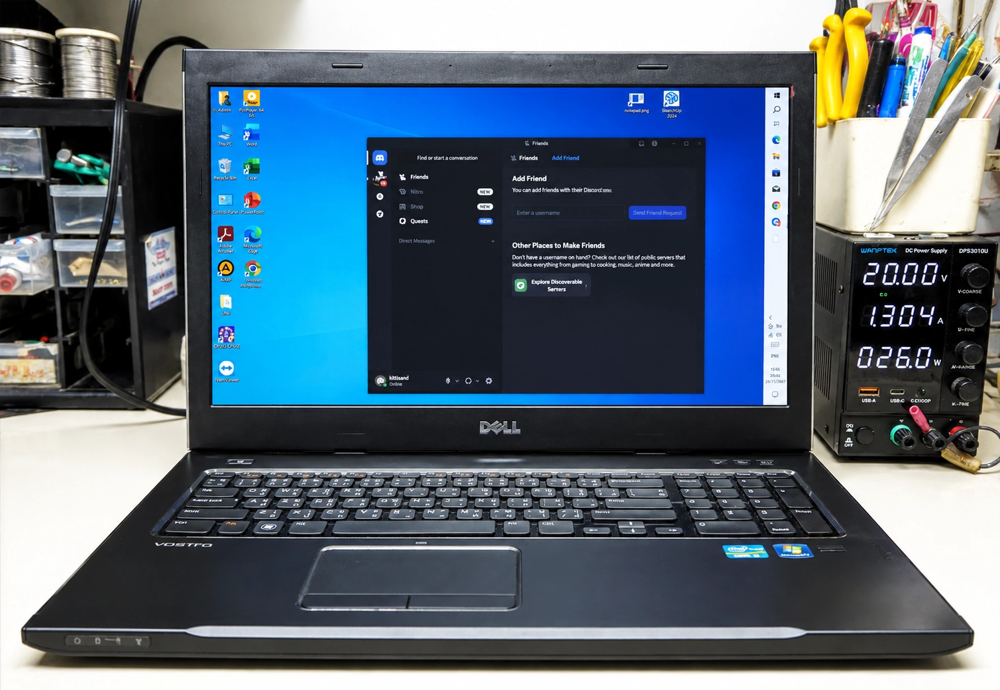

1. การตรวจเช็คอาการก่อนซ่อม
1. ตรวจเช็คอาการแรกรับและการถอดเปลี่ยนจอ (Before) ลูกค้านำโน๊ตบุ๊ค Dell Vostro 3750 เข้ามาส่งซ่อมกับทางร้าน ซ่อมโน๊ตบุ๊ค เชียงใหม่ เนื่องจากหน้าจอมีเส้นกวนสว่างขึ้นมาบริเวณขอบล่าง ทำให้แสดงผลได้ไม่สมบูรณ์และรบกวนสายตาขณะใช้งาน ช่างได้ทำการตรวจเช็คและเสนอเปลี่ยนอะไหล่จอใหม่ที่ได้มาตรฐาน สเปกตรงรุ่น โดยเริ่มดำเนินการถอดกรอบหน้าจอและแกะพาเนลจอเดิมที่เสียหายออกเพื่อเตรียมวางพาเนลใหม่

2. ตรวจพบอาการร้องเตือน 5 Beeps & บริการดูแลพิเศษฟรี!
ระหว่างการทดสอบเปิดเครื่อง ช่างพบอาการแทรกซ้อนคือมีเสียงสัญญาณเตือน **5 Beep Codes (เสียงร้องติ๊ด 5 ครั้งติดกัน)** ซึ่งสำหรับโน๊ตบุ๊ค Dell หมายถึงสัญญาณเตือน **Real Time Clock (RTC) / ถ่าน BIOS หมดสภาพ หรือแรงดันไฟต่ำกว่าเกณฑ์** ทำให้ระบบจำค่าเวลาและโครงสร้าง BIOS ไม่ได้
ทางร้าน **ซ่อมโน๊ตบุ๊ค เชียงใหม่** จึงทำการกู้คืนระบบโดยการ **เปลี่ยนถ่าน BIOS เม็ดใหม่ให้ฟรี!** พร้อมทั้งรื้อทำความสะอาดคราบฝุ่นหนาแน่นบริเวณซิ๊งค์ระบายความร้อนและพัดลม (Cooling System Cleaning) แถมให้อีกหนึ่งรายการ เพื่อให้เครื่องทำงานได้เย็นและยืดอายุการใช้งานให้ยาวนานขึ้นครับ


3. สรุปผลงานซ่อมและการทดสอบ
3. ผลลัพธ์หลังซ่อมเสร็จสมบูรณ์ และการทดสอบระบบ (After) เมื่อประกอบหน้าจอใหม่ เปลี่ยนถ่าน BIOS และทำความสะอาดบอร์ดเรียบร้อย ผลการทดสอบเปิดเครื่องพบว่า **เสียงร้องเตือน 5 Beeps หายไปทันที** ตัวเครื่องบูตเข้าสู่หน้า Windows ได้ตามปกติ หน้าจอใหม่แสดงผลคมชัด สีสันสดใส ไม่มีเส้นรบกวนหรือจุด Pixel เสียแม้แต่จุดเดียว พร้อมส่งมอบคืนมือลูกค้าเรียบร้อยครับ

คำถามที่พบบ่อย (FAQ)
ซ่อมโน๊ตบุ๊คเชียงใหม่ Computer Services
งานซ่อมได้มาตรฐาน อะไหล่แท้ตรงรุ่น ตรวจเช็คฟรี ประสบการณ์มากกว่า 10 ปี